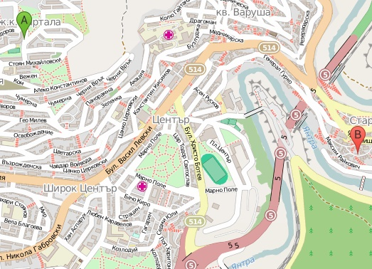
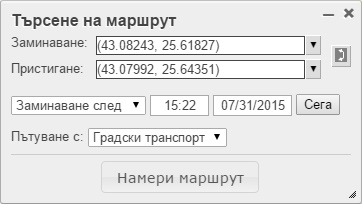
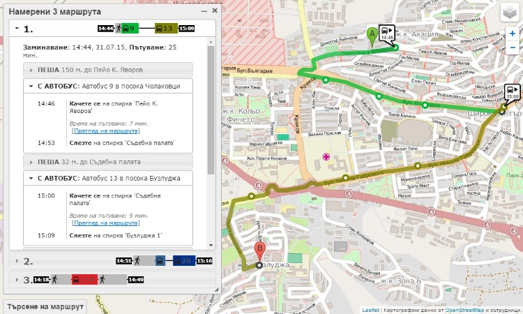
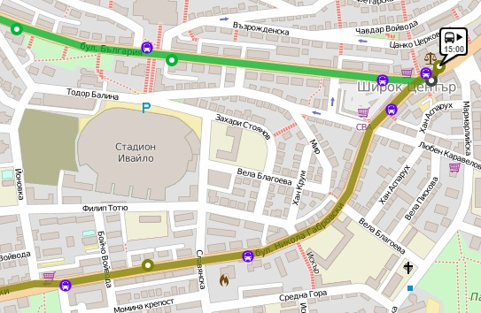
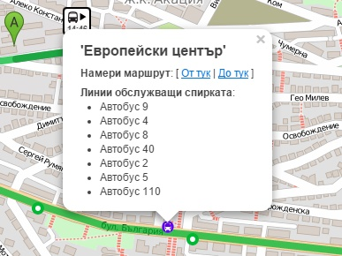

Spirka.info е интерактивна онлайн услуга за намиране на маршрут с градски транспорт в гр. Велико Търново. Услугата обхваща линиите на вътрешноградския транспорт. Предвижда се да бъдат добавени крайградските линии до близките населени места и междуградският транспорт до гр. Горна Оряховица.
За избор на начална точка кликнете веднъж с левия бутон на мишката върху мястото, от което смятате да започнете вашето пътуване. На картата ще се появи маркер A (със зелен цвят) - начална точка на пътуването.
За избор на крайна точка кликнете върху мястото, до което искате да достигнете. На картата ще се появи маркер B (с червен цвят) - крайна точка за пътуването.
Избор на начална (A) и крайна точка (B)
Ако желаете да промените началната или крайната точка, преместете маркера чрез влачене с левия бутон на мишката.
Освен чрез кликване върху географската карта, може да укажете началната и крайната точка, като въведете име на спирка или улица.
По подразбиране в панела "Търсене на маршрут" е избрана опция "Заминаване след". Това означава, че системата търси маршрути, които могат да бъдат изпълнени при заминаване, веднага след момента на търсене. Системата се стреми да избира маршрути, които осигуряват бързо придвижване и малко чакане или ходене.
Често при планиране на пътуване целта не е да излезете възможно най-рано и да пристигнете възможно най-бързо, а се налага да пристигнете на дадено място в точен час. В такива случай променете опцията "Заминаване след" на "Пристигане преди". Системата ще Ви предложи маршрути, които позволяват да излезете максимално късно и все пак да пристигнете преди указания час. Градският транспорт не гарантира точно спазване на разписанието, затова винаги указвайте по-ранен час на пристигане!
Предпочитания за търсене на маршрут
Системата ще Ви предложи от 1 до 3 варианта на маршрут между началната и крайната точка, която сте избрали. Върху картата ще се визуализира първият вариант на маршрут. Може да изберете за визуализиране друг вариант от списъка с намерени маршрути.
Визуализацията на всеки маршрут включва:
Предложение за маршрут
Ако увеличите мащаба на картата достатъчно, освен спирките в продължение на избрания маршрут, ще се визуализират маркери за всички спирки на градския транспорт.
Спирки
При кликване върху маркер на спирка се визуализира прозорец с информация за спирката.
Информация за избрана спирка
Услугата е създадена с учебна цел и не се стреми към постигане на точност и пълнота на предоставяната информация. Авторът не носи отговорност за нанесени вреди и пропуснати ползи вследсвие на използване на тази услуга. Използвайте на собствен риск.
Услугата е неофициална и не е обвързана по никакъв начин с община "Велико Търново" или фирмите превозвачи.
Авторът на услугата не носи никаква отговорност за безопасността, проектирането и изграждането на съоръженията на градския транспорт, както и небрежност, умишлени или престъпни деяния, свързани със съоръженията или превозните средства на превозвачите. Предполага се, че услугата ще се използва само от лица на достатъчна възраст, които са способни да преценяват поемането на рискове, и които притежават достатъчен опит като шофьор или пешеходец, познават закона за движение по пътищата и всички други приложими закони, и се съобразяват с тях.
Услугата е базирана на OpenTripPlanner - проект с отворен код с лиценз GNU Lesser General Public License (LGPL), повече за който може да прочетете на адрес http://www.gnu.org/licenses/lgpl.html. Всички направени промени в изпълнимия код са достъпни тук.
За създаване на пакет с данните за маршрутите съгласно стандарта GTFS е използван редакторът GTFS Editor Всички направени промени в изпълнимия код на редактора са достъпни тук.
Този уеб сайт използва картографски данни от OpenStreetMap. Повече за лицензионните условия за предоставяне на картографски данни от OpenStreetMap може да прочетете на адрес: http://www.openstreetmap.org/copyright.
При съставяне на GTFS пакета с данните за маршрутите е използвана информация за разписанието на градския транспорт в гр. Велико Търново от уеб сайт: http://gtvt2012.blogspot.com